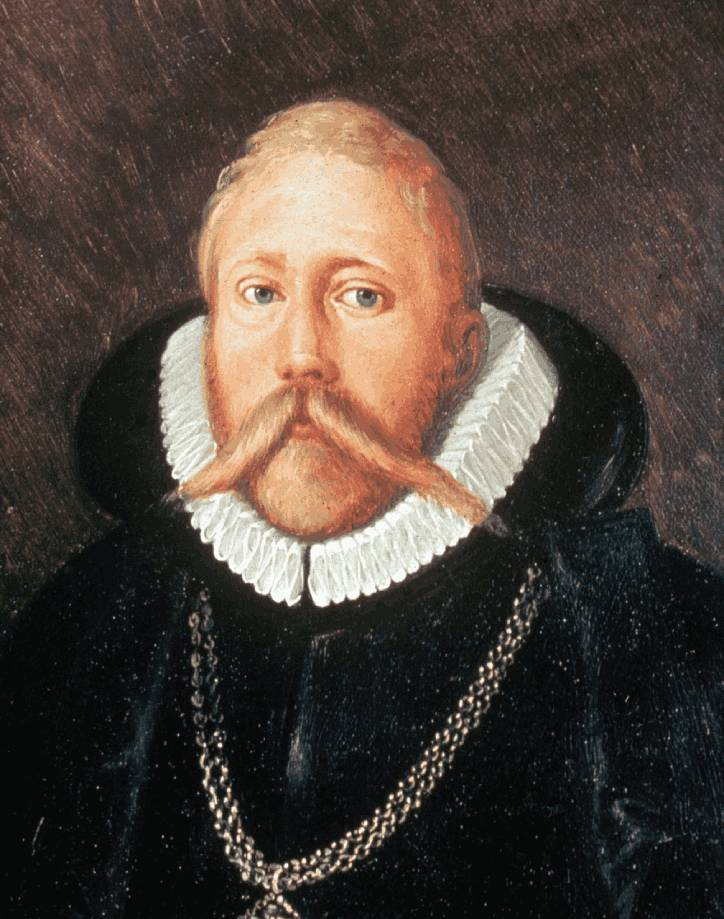
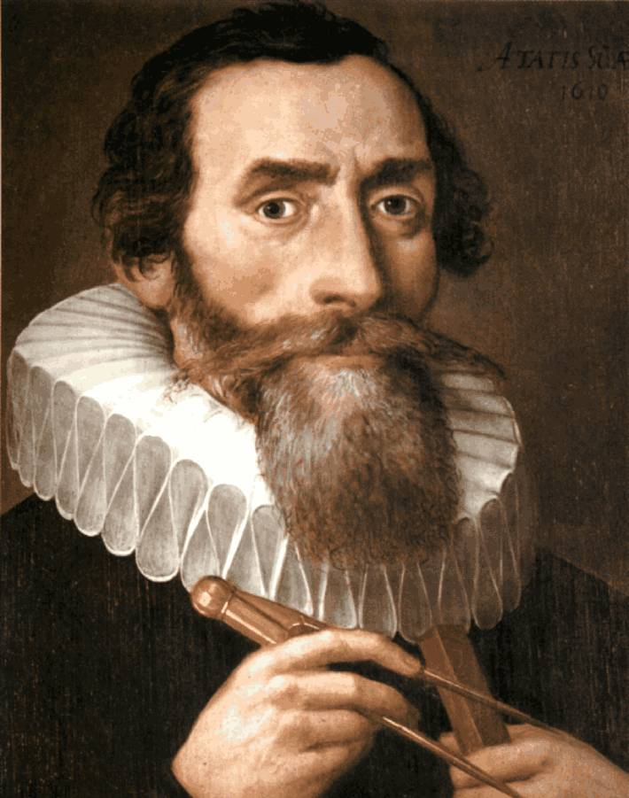
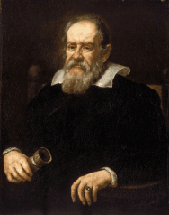

Nicolau Copérnico
Retrato de Nicolau Copérnico.
Nicolau Copérnico (1473 - 1543) foi um grande astrônomo polonês. Ele foi o primeiro a propôr uma teoria heliocêntrica, contra a teoria geocêntrica de Ptolomeu que até então era amplamente aceita por todo o cenário ciêntifico e religioso. Copérnico, para simplificar a teoria complexa de Ptolomeu que precisava de muitos epiciclos e regras específicas para prever o movimento dos planetas e dos outros corpos do Sistema Solar, pensou que caso o Sol estivesse no centro, e os planetas tivessem órbitas circulares em torno dele, os movimentos dos corpos do Sistema Solar poderiam ser previstos de forma bem mais simples, precisa, e com menos incongruências do que no modelo de Ptolomeu.
Tycho Brahe

Retrato de Tycho Brahe.
Tycho Brahe (1546 - 1601) foi um importantíssimo astrônomo observacional, e o último influente antes da criação da luneta e dos telescópios. Suas observações eram feitas a partir de instrumentos feitos por ele, que deixavam as suas observações a olho nu, mais precisas. Ele foi um dos primeiros a fazer observações e registros diários da posição e das propriedades das estrelas e planetas no céu, além de também possuir registros muito precisos, que posteriormente auxiliaram muito nos cálculos e na criação das teorias de Johannes Kepler.
Johannes Kepler

Retrato de Johannes Kepler.
Johannes Kepler (1571 - 1630) foi um dos principais astrônomos para toda a história da astronomia. Assim como descrito no tópico das Leis de Kepler, ele foi quem propôs ideias, com uma base matemática sólida, que mudaram a forma como as pessoas, inclusive os astrônomos da época, enxergavam o Universo. Kepler foi o primeiro a dizer, com provas observacionais e matemáticas, que a órbita de todos os planetas eram elípticas. Entre as suas principais contribuições, estão as três Leis de Kepler e a determinação das órbitas da Terra e de Marte.
Galileu Galilei

Retrato de Galileu Galilei.
Galileu Galilei (1564 - 1642) foi um físico e astrônomo muito importante para toda a ciência. Galileu teve grandes contribuições para a mecânica de Newton, e chegou a descobrir algumas leis, como a Lei da Queda dos Corpos. Além de tudo isso, sua principal contribuição para a astronomia, foi a "invenção" do telescópio. Mesmo que Galileu não tenha inventado, pois as lentes e os instrumentos que ampliavam a imagem já existiam há algum tempo antes, ele foi o primeiro a apontar um telescópio para o céu. Com o telescópio, Galileu fez observações muito importantes, que provaram a veracidade do sistema heliocêntrico, como a observação das fases de Vênus, e outras observações que mostraram propriedades dos corpos celestes e outros corpos celestes antes desconhecidos, como o relevo da Lua, as várias estrelas que compõe a Via Láctea, os satélites naturais de Júpiter e as "orelhas de Saturno", que ele, quando observou, ainda não sabia que se tratavam de anéis que orbitavam o planeta. Galileu Galilei, por suas ideias apoiarem, e por divulgar as ideias heliocentristas, foi perseguido pela inquisição, e só foi perdoado pelo Papa João Paulo II, em 1992.